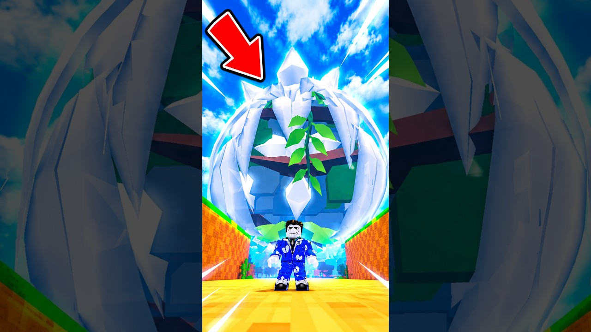

🥚 xLORSI „fuzionează” cel mai mare Divine Egg: ~464K pe formula fugă, pierdere, reveal

🥚 xLORSI are un short de 162 de secunde, „I Fused The BIGGEST DIVINE EGG”, cu aprox. 464K vizualizări și un ritm de aprox. 25K/oră, citite la 20 oct seara (~20:20 RO).
- 📅 Urcat pe 20 oct, pe la 07:54 (ora României)
- ▶️ https://www.youtube.com/shorts/5daqPWsvJxo
🎬 Formula (dedusă din frame-uri; copiem formula, nu clipul):
- Miză → fugă/furt → pierde/recuperează → reveal
- Câte un cuvânt mare pe ecran la fiecare etapă: RUN!!, RECOVER, LOSING
- În gameplay se vede Fuse Machine (0/3)
- CLAIM: Divine Egg-ul și rezultatul fuziunii sunt afirmațiile din clip, nu confirmate de noi
🪝 Hook-ul: miza mare din titlu și întrebarea „ce iese până la urmă?”.
💡 Ideea VEXU: „Bag 3 ouă în Fuse Machine: ce iese?”, cu FUR / FUG / PIERD / RECUPEREZ pe ecran, fără să promitem rarități.
🔗 Tot pe Divine Egg: meme-ul cu Flash, „When New Divine Egg Spawned”: https://pyromanc3r777.github.io/vexu-hq/posts/meme-ul-cu-flash-when-new-divine-egg-spawned-sare-de-1-6m.html
🔎 TikTok, de căutat în aplicație: „steal an egg fuse machine”.
Follow pe TikTok @vexu_online și abonare pe YouTube la VEXU Online. Follow = Au ce bile! 💥